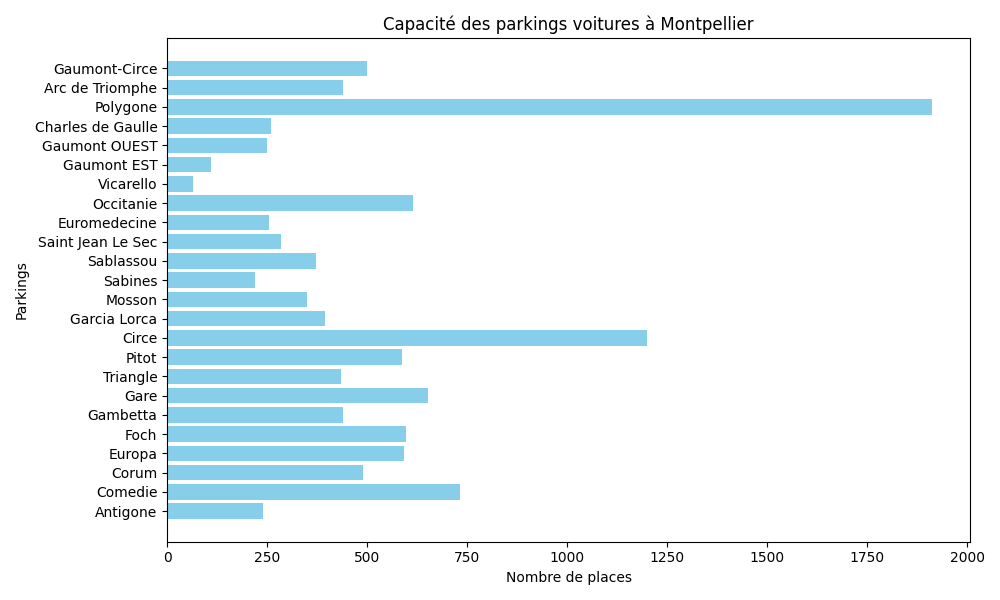
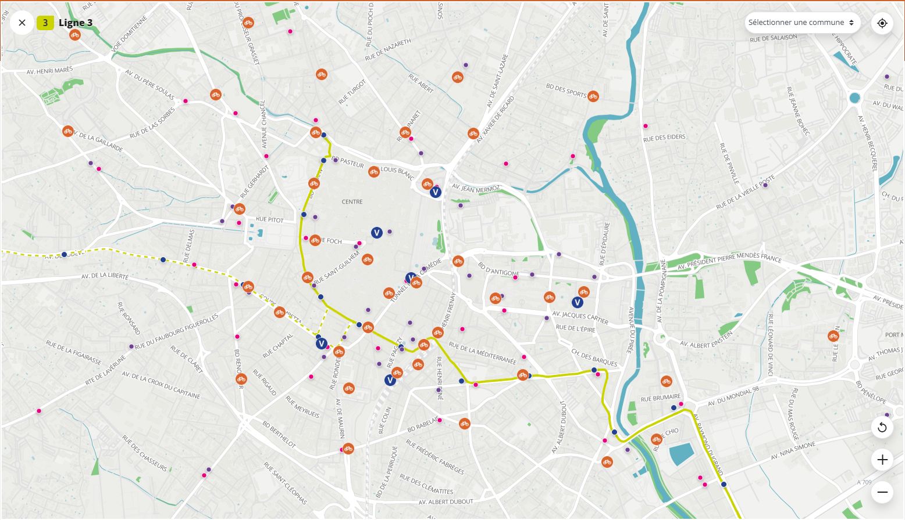
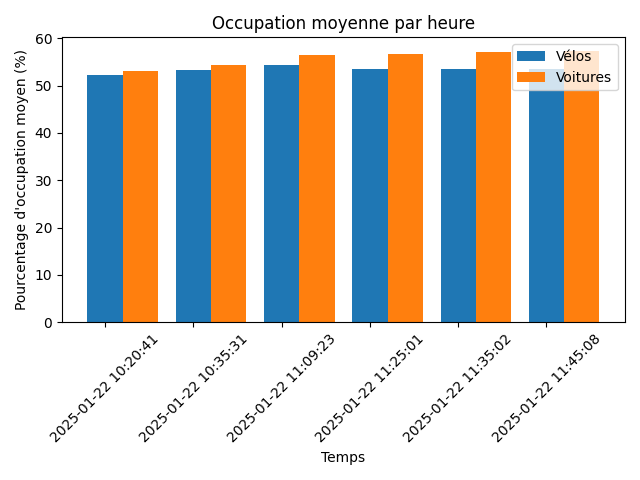
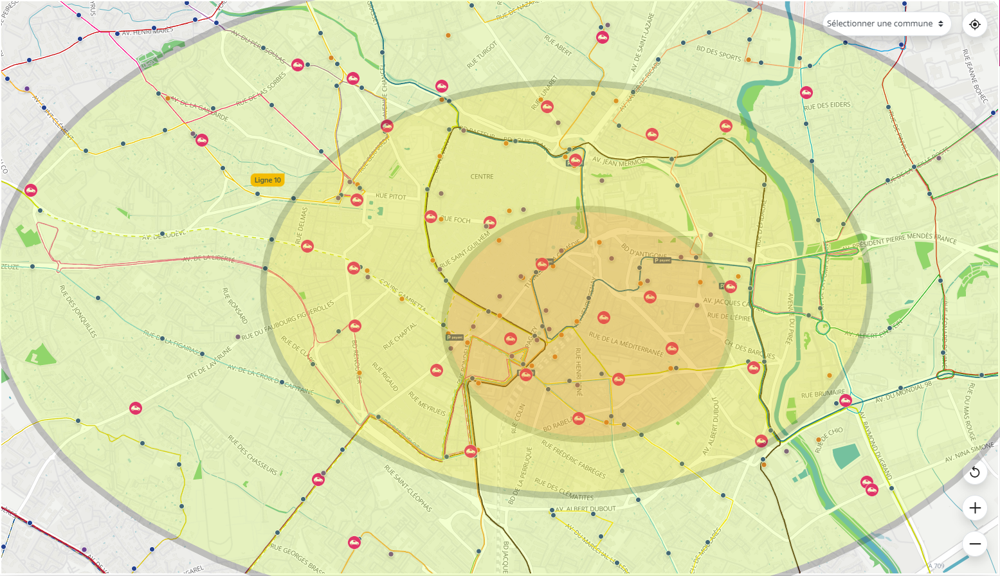
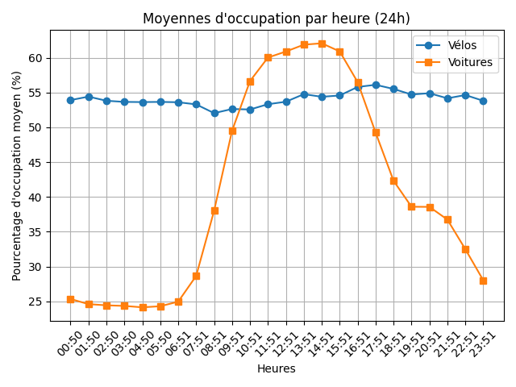
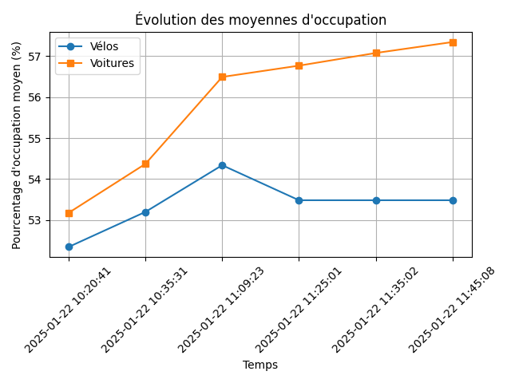

Introduction
Nous avons été mandatés par la mairie de Montpellier pour étudier l'utilisation des parkings de la ville. L'objectif est d'évaluer l'efficacité du système de relais entre les parkings automobiles et les parkings à vélos, afin de vérifier s'il fonctionne comme prévu.
Pour ce faire, nous avons analysé différentes données issues de la plateforme Open Data Montpellier.
Questions
Quelle est la capacité maximale des parkings automobiles de Montpellier ?
La ville de Montpellier dispose d’une capacité totale de 11 990 places pour les voitures, réparties sur 25 parkings situés selon nos observations dans les zones importantes comme le centre-ville, les gares, et les centres commerciaux, ect. La taille des parkings varie largement : des grands parkings comme le Polygone (1 911 places) ou Circe (1 200 places) aux parkings plus modestes comme Vicarello (65 places) ou Gaumont EST (109 places).
Graphique de la répartition des places de parkings
Combien de parkings à vélos sont disponibles dans la ville ?
Montpellier compte 53 parkings à vélos, offrant une capacité totale de 703 places. Ces parkings sont répartis principalement dans le centre ville et les points affluent de la ville centre-ville, les gares,ect. Les capacités des parkings varient généralement entre 8 et 32 places.
Emplacement des parkings a velo dans le centre ville de Montpellier
Quel est le taux d'occupation moyen des parkings automobiles ?
Le taux d’occupation des parkings automobiles à Montpellier est difficile à généraliser en raison des fortes inégalités entre les différentes zones, on remarque en revanche qu'en journée durant la semaine le taux d’occupation se rapproche fortement en moyenne dès 52% . Les parkings situés en centre-ville et dans les zones commerciales (par exemple, Comédie, Corum, Polygone) sont très remplis et souvent saturés aux heures de pointe comme le début d'après midi et en soirée. À l’inverse, les parkings périphériques, notamment ceux situés dans des quartiers résidentiels ou à proximité des stations de tramway (comme Mosson ou Sabines), connaissent une utilisation plus faible.
Graphique de la répartition des places de parkings sur 1h
Quels sont les jours les plus chargés pour les parkings ?
Les jours les plus chargés pour les parkings sont principalement les jeudis, vendredis et samedis, correspondant à une hausse des activités en ville, des sorties le soir. En semaine, les parkings situés à proximité des zones d’activité économique et des gares sont plus sollicités tandis que dans le centre ville l'activité semble toujours assez élevée tout au long de la journée. Les parkings relais en périphérie connaissent une utilisation plus “limitée”, principalement en semaine pour des trajets “domicile-travail”, mais restent souvent moins utilisés le week-end.
Existe-t-il des incitations pour utiliser les parkings à vélos ?
Oui, la ville de Montpellier propose des “incitations” pour favoriser l’utilisation des parkings à vélos, avec des réductions sur les abonnements “Vélomagg” qui incluent le stationnement sécurisé et l’accès aux vélos en libre-service. Ces mesures semblent efficaces dans les zones où la demande est élevée. Cependant, il semble qu’il serait judicieux d’étendre ces programmes aux parkings moins utilisés en périphérie pour équilibrer l’affluence et promouvoir davantage l’utilisation du vélo dans des zones moins “occupé”
Les parkings sont-ils accessibles 24/7 ?
La majorité des parkings automobiles de Montpellier sont accessibles 24 heures sur 24 et 7 jours sur 7, en particulier dans les comme le centre-ville (Comédie, Polygone) et les gares. Cette accessibilité permanente favorise leurs utilisations, qu’il s’agisse de déplacements ou de stationnement. Les parkings à vélos, en revanche, sont soumis à des restrictions horaires dans certains cas, limitant leur utilisation pour des trajets tôt le matin ou tard le soir. Une extension des horaires d’accès pour les infrastructures cyclables pourrait encourager davantage d’usagers à opter pour ce mode de transport.
Quel est le coût moyen d'un parking à Montpellier ?
Le coût moyen des parkings automobiles à Montpellier varie selon l’emplacement et les services proposés. Dans les parkings centraux, comme Comédie, Polygone ou Corum, les tarifs horaires se situent généralement entre 1,50 € et 3,00 €, avec des plafonds journaliers. Il est également possible de prendre des abonnements qui réduisent les couts d'utilisation des parkings
Y a-t-il des zones où les parkings sont insuffisants ?
Oui, certaines zones de Montpellier souffrent d’une capacité de stationnement insuffisante par rapport à la demande. Les parkings situés en centre-ville, notamment Foch, Comédie et Corum, montrent souvent des signes de saturation, particulièrement aux heures de pointe et pendant les périodes “d’événements commerciaux” comme les soldes. Pour les vélos, des parkings comme ceux de Boutonnet, Odysseum ou Saint-Denis atteignent fréquemment leur pleine capacité, indiquant un besoin urgent d' augmenter les parkings à vélo dans ces zones. À l’inverse, les parkings situés en périphérie sont souvent sous-utilisés.
Heat Map des taux d'affluence en focntion de la localisation des parkings
Visualisation des Données
Carte de France (Graphique 1)
Graphique France 1
Conclusions
Montpellier a un réseau de parkings bien développé, aussi bien pour les voitures que pour les vélos. Cependant, on remarque que les parkings du centre-ville sont souvent pleins, tandis que ceux en périphérie restent peu utilisés. Pour améliorer la situation, il serait utile de proposer des tarifs plus attractifs et de mieux connecter les parkings périphériques avec les transports en commun. Pour les vélos, certains parkings, comme ceux près des universités ou des zones commerciales, manquent de places. Ajouter plus de capacités dans ces endroits et mieux promouvoir les parkings moins utilisés pourrait aider